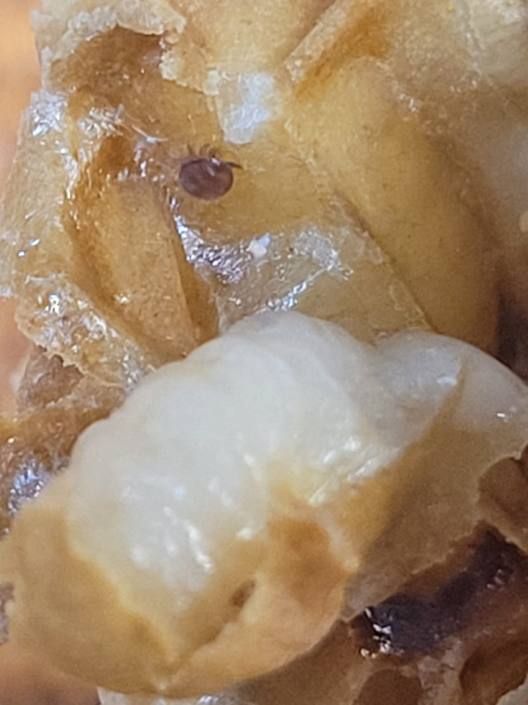

Varroa Mite Overview
The Varroa destructor is a parasitic mite that significantly affects honeybee colonies by feeding on bee larvae and adults. This can weaken the bees and make them more susceptible to diseases, potentially leading to colony collapse if not managed effectively.
When to Treat for Varroa
Varroa treatment in the UK typically follows a seasonal schedule:
- Late Winter/Early Spring (February to March): Monitor mite levels as the colony begins to expand. Early treatment helps reduce the mite load before population growth.
- Late Summer (July to August): After the honey harvest, treat bees to reduce mite levels before winter brood is raised.
- Autumn (September to October): A follow-up treatment may be necessary to protect winter bees.
Chemicals and Treatments
Rotate treatments to prevent resistance. Both chemical and non-chemical options exist.
Chemical Treatments
- Apivar (Amitraz): A miticide used in strips placed in the hive for several weeks.
- Thymol-based products (e.g., Apiguard): Effective natural treatments used in moderate temperatures.
- Oxalic Acid: Trickle or vaporize during broodless periods for maximum impact.
- Formic Acid (e.g., MAQS): A natural but temperature-sensitive treatment usable during brood cycles.
Non-Chemical Methods
- Drone Brood Removal: Mites prefer drone brood; removing it reduces infestation.
- Screened Bottom Boards: Allow mites to fall through, reducing reinfestation.
- Powdered Sugar Dusting: Dislodges mites from bees; works best as part of an integrated plan.
Honey Supers and Treatment
During Varroa treatments, consider honey supers carefully:
- Chemical Treatments and Honey Supers: Avoid treating with supers on to prevent contamination.
- When to Remove Supers: Remove before treatment and replace only after the specified waiting period.
Monitoring and Reassessing
Monitor mite levels before and after treatment using the following methods:
Sugar Roll (Powdered Sugar Shake)
A non-lethal method to estimate infestation:
- Sample Collection: Take about 300 bees from the brood nest.
- Dusting: Add powdered sugar, shake gently to coat bees.
- Mite Dislodging: Shake over white paper to count dislodged mites.
- Threshold: Over 3 mites per 100 bees suggests treatment is needed.
Advantages: Non-lethal and repeatable throughout the season.
Alcohol Wash
A highly accurate but lethal method:
- Sample Collection: Collect ~300 bees from brood area.
- Solution: Use alcohol, washer fluid, or soapy water in a jar.
- Shaking: Shake vigorously; mites fall through the lid screen.
- Analysis: Count mites and calculate infestation level.
Advantages: Very accurate.
Disadvantages: Kills the sampled bees.
Drone Brood Culling and Inspection
Mites target drone brood due to its longer development time:
- Frame Installation: Place dedicated drone comb in hive.
- Uncapping: Once capped, remove and inspect cells.
- Counting: Count mites found on pupae.
Advantages: Reduces mites and preserves worker bees.
Disadvantages: Time-consuming and only estimates infestation.
Sticky Boards
Passive monitoring using mite fall:
- Installation: Place sticky/oiled board under screen bottom board.
- Collection: Leave 3 days, then count fallen mites.
- Analysis: Estimate colony mite level based on daily fall rate.
Advantages: Non-intrusive and long-term.
Disadvantages: Can underestimate mite load.
Visual Inspection
Quick but less accurate method:
- Inspect Bees: Look for mites on adult bees and in brood.
- Brood Check: Uncap cells to check developing bees.
Advantages: Fast and no extra tools needed.
Disadvantages: Only useful when infestation is already advanced.
Conclusion
Effective Varroa management is critical to colony survival. Use the right treatments at the right times, monitor regularly, and combine chemical and non-chemical strategies. Read more about related topics like hive management and hive hygiene practices to keep your colonies healthy all year round.